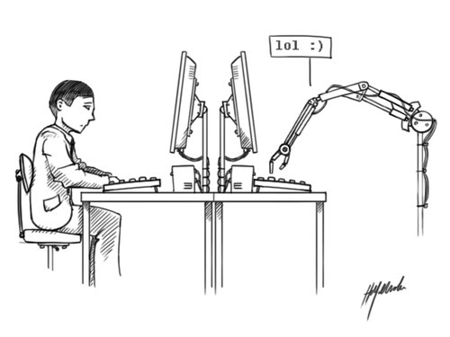

Voight-Kampff Machines
Originally published at https://singularityhacker.com/voight-kampff-machines

Meet Samantha West. Samantha is a telemarketing software agent. A caller bot.
Its reasonable to think that Samantha is going to get faster over the next Moore cycle. Those long pauses are going to disappear
At the point where her pauses disappear you would have to test her with “deep” questions right at the beginning of the conversation or you wouldn’t be able to tell.

Then, let’s say that 6 years from now, you can’t even tell by asking complex questions because the bots are plugged into graph databases. At least not without risking alienating what could be a legitimate human being. But when a person can no longer tell if you are speaking to a bot, they can start writing software that can. Now you are using a tool. A machine to determine whether something is a machine or a human. This is what a Voight-Kampff machine is.